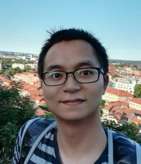

I am a research scientist in the software engineering application technology lab at Huawei, China. Prior to that, I was an associate professor in Software Engineering at the College of Computer Science and Technology (CCST), Nanjing University of Aeronautics and Astronautics (NUAA). Before I joined NUAA, I was a research associate at the University of Luxembourg (UL). I obtained my PhD degree in December 2019 from the Interdisciplinary Security and Trust Centre (SnT), University of Luxembourg, under the supervision of Prof. Dr. Yves Le Traon (IEEE Fellow), Associate Prof. Dr. Tegawendé F. Bissyandé (ERC Fellow), and Dr. Dongsun Kim.
Research interests:
ASE'22 StandUp4NPR: Standardizing Setup for Empirically Comparing Neural Program Repair Systems, W. Zhong, H. Ge, H. Ai, C. Li, K. Liu, J. Ge, and B. Luo.
ASE'22 Is this Change the Answer to that Problem? Correlating Descriptions of Bug and Code Changes for Evaluating Patch Correctness, H. Tian, X. Tang, A. Habib, S. Wang, K. Liu, X. Xia, J. Klein, and T. F. Bissyandé.
FSE'22 The Best of Both Worlds: Integrating Semantic Features with Expert Features for Defect Prediction and Localization, C. Ni, W. Wang, K. Yang, X. Xia, K. Liu, D. Lo.
TOSEM Predicting Patch Correctness Based on the Similarity of Failing Test Cases, H. Tian, Y. Li, W. Pian, A. K. Kabore, K. Liu, A. Habib, J. Klein, and T. F. Bissyandé.
ICSE'22 Towards Automatically Repairing Compatibility Issues in Published Android Apps, Y. Zhao, L. Li, K. Liu, J. Grundy.
JSS A Critical Review on the Evaluation of Automated Program Repair Systems, K. Liu, L. Li, A. Koyuncu, D. Kim, Z. Liu, J. Klein, and T. F. Bissyandé.
ASE'20 Evaluating Representation Learning of Code Changes for Predicting Patch Correctness in Program Repair, H. Tian, K. Liu, A. K. Kaboré, A. Koyuncu, L. Li, J. Klein, T. F. Bissyandé.
ESEC/FSE'20 Exploring How Deprecated Python Library APIs are (Not) Handled, J. Wang, L. Li, K. Liu, H. Cai.
ICSE'20 On the Efficiency of Test Suite based Program Repair: A Systematic Assessment of 16 Automated Repair Systems for Java Program, K. Liu, S. Wang, A. Koyuncu, K. Kim, T. F. Bissyandé, D. Kim, P. Wu, J. Klein, X. Mao and Y. Le Traon.
ESEC/FSE'19 iFixR: Bug Report driven Program Repair, A. Koyuncu, K. Liu, T. F. Bissyandé, D. Kim, M. Monperrus, J. Klein and Y. Le Traon.
ISSTA'19 TBar: Revisiting Template-based Automated Program Repair, K. Liu, A. Koyuncu, D. Kim and T. F. Bissyandé.
ICSE'19 Learning to Spot and Refactor Inconsistent Method Names, K. Liu, D. Kim, T. F. Bissyandé, T. Kim, K. Kim, A. Koyuncu, S. Kim and Y. Le Traon.
ICST'19 You Cannot Fix What You Cannot Find! An Investigation of Fault Localization Bias in Benchmarking Automated Program Repair Systems, K. Liu, A. Koyuncu, T. F. Bissyandé, D. Kim, J. Klein and Y. Le Traon.
TSE Mining Fix Patterns for FindBugs Violations, K. Liu, D. Kim, T. F. Bissyandé, S. Yoo, and Y. Le Traon.